Większa prędkość
Zwiększamy limit prędkości nawet do 30 km/h, dostosowując parametry do Twojego modelu i preferencji jazdy.
Profesjonalna modyfikacja oprogramowania Xiaomi Electric Scooter wykonywana w Łodzi. Zwiększenie prędkości, tempomat, indywidualna konfiguracja — gotowe w 60 minut.
Modyfikujemy hulajnogi Xiaomi z pasją i precyzją. Każda usługa wykonywana jest indywidualnie, z dbałością o szczegóły i bezpieczeństwo użytkownika.
Zwiększamy limit prędkości nawet do 30 km/h, dostosowując parametry do Twojego modelu i preferencji jazdy.
Tryby Drive i Sport konfigurujesz pod siebie — własne limity prędkości dla każdego z nich. Twoja hulajnoga, Twoje zasady.
Nie ingerujemy mechanicznie w silnik ani akumulator. Modyfikacja polega wyłącznie na konfiguracji oprogramowania.
Standardowa modyfikacja trwa od 30 do 60 minut. Możesz poczekać na miejscu i od razu wrócić do jazdy.
Masz pytanie po modyfikacji? Służymy pomocą. Dostępni telefonicznie i mailowo w razie jakichkolwiek wątpliwości.
Oferujemy modyfikację dla wszystkich popularnych modeli Xiaomi Electric Scooter dostępnych w Polsce.
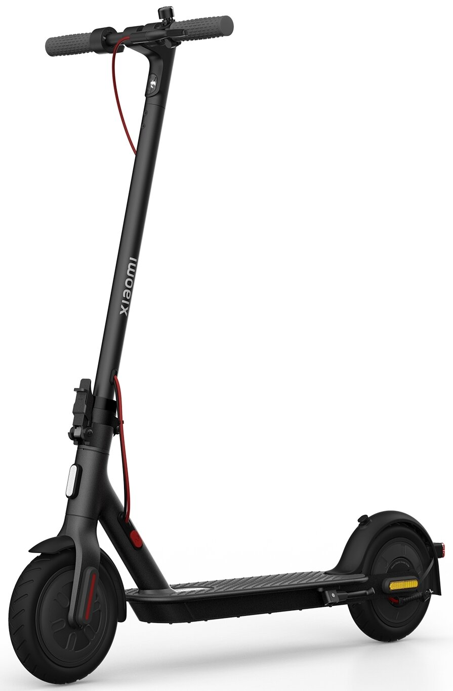
250WLekki i kompaktowy model dla początkujących. Po modyfikacji znacznie przyjemniejsza jazda w mieście.
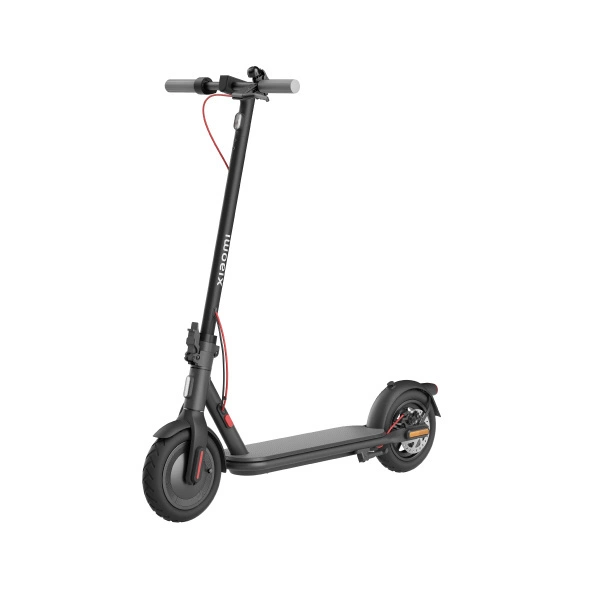
300WPopularny model z solidną baterią. Idealny do codziennych dojazdów. Po modyfikacji — jeszcze lepszy.
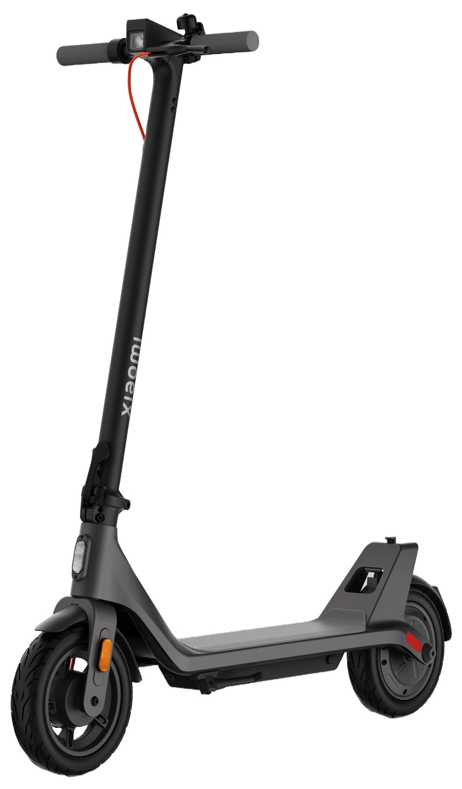
300WOdchudzony wariant czwórki — lżejszy, tańszy, a po naszej modyfikacji — szybszy niż myślisz.
 Nowy
Nowy
Ulepszona wersja 4 Lite z lepszym zawieszeniem. Obsługujemy najnowszy firmware 2nd Gen.
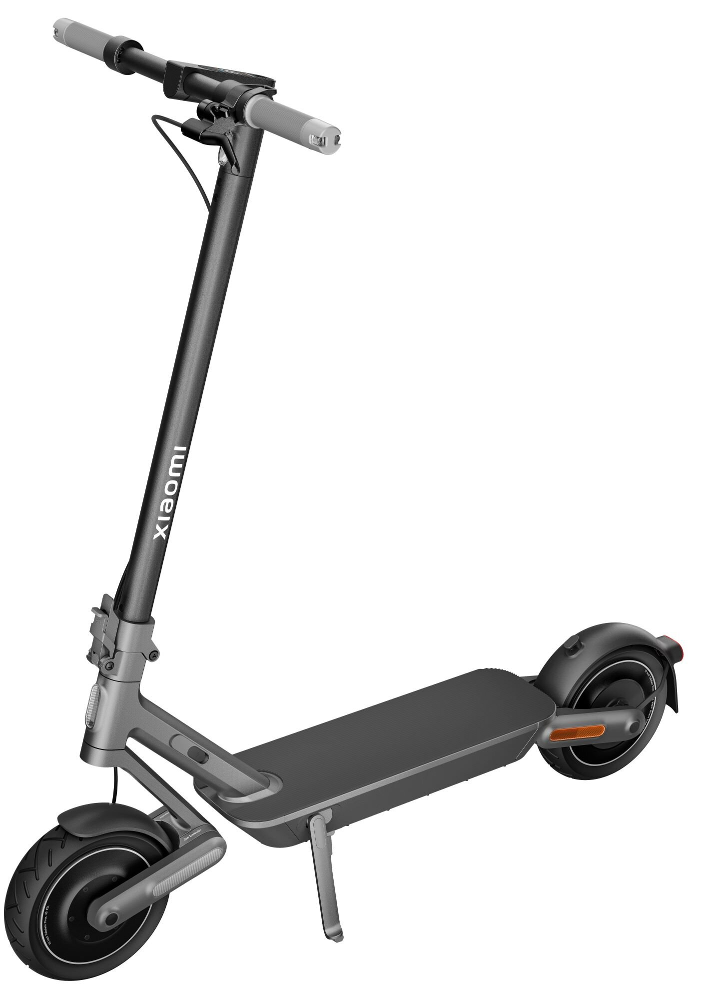
500WFlagowiec czwartej generacji z silnikiem 700W. Po modyfikacji osiąga imponujące parametry.
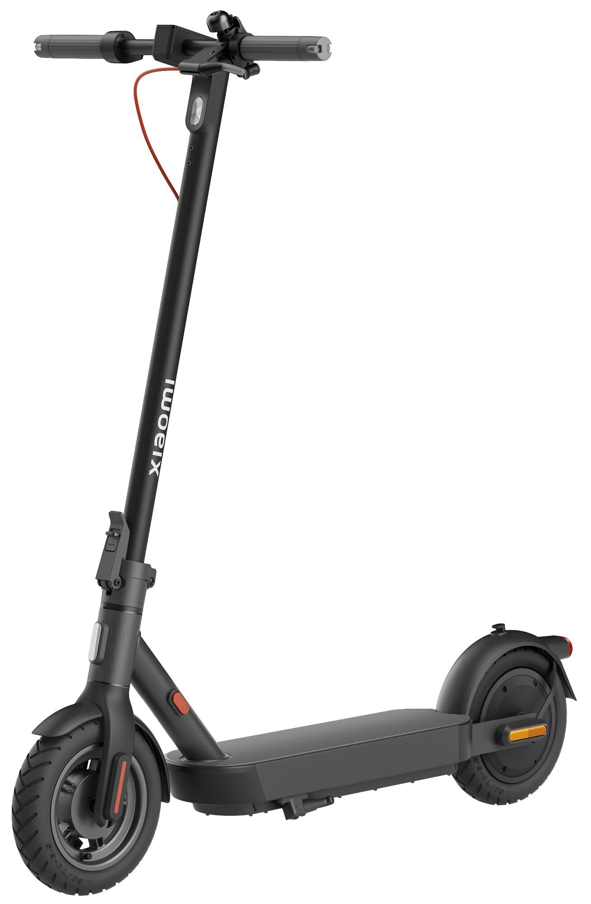
400WMocna druga generacja modelu Pro. Obsługujemy nowe oprogramowanie — pełna kompatybilność.
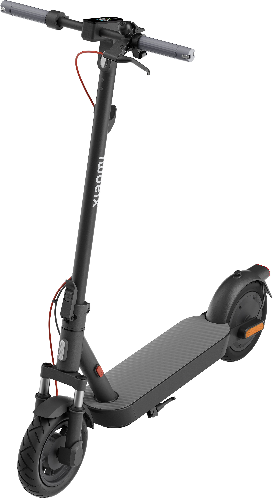
Nowa gen.Najnowsza linia Xiaomi. Elegancki design, ulepszone podzespoły. Modyfikacja dostępna od premiery.
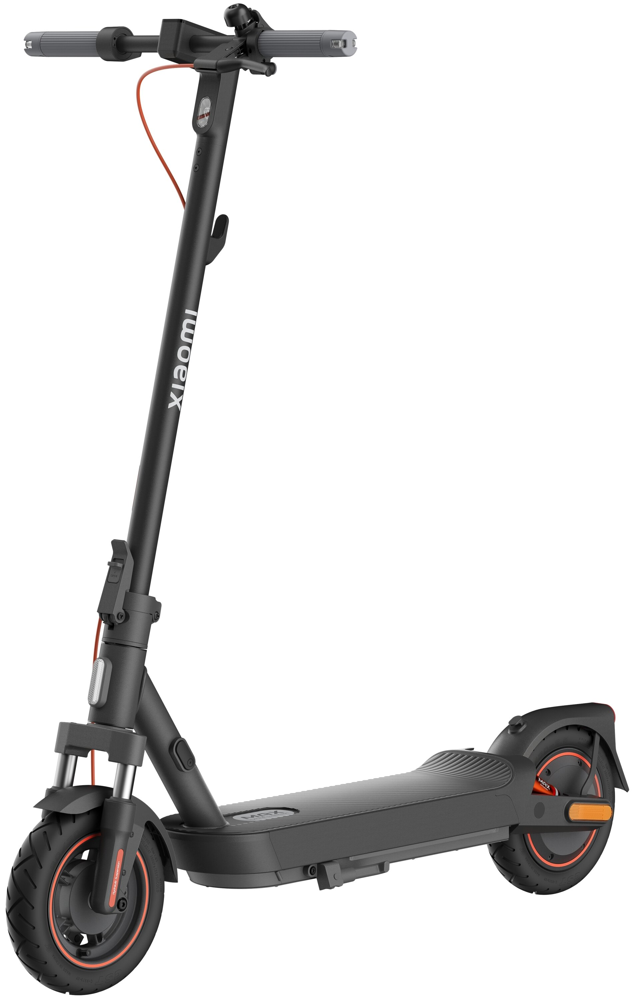
Duży zasięgMaksymalny zasięg, maksymalna wydajność. Idealny na dłuższe trasy. Po modyfikacji jeszcze więcej możliwości.
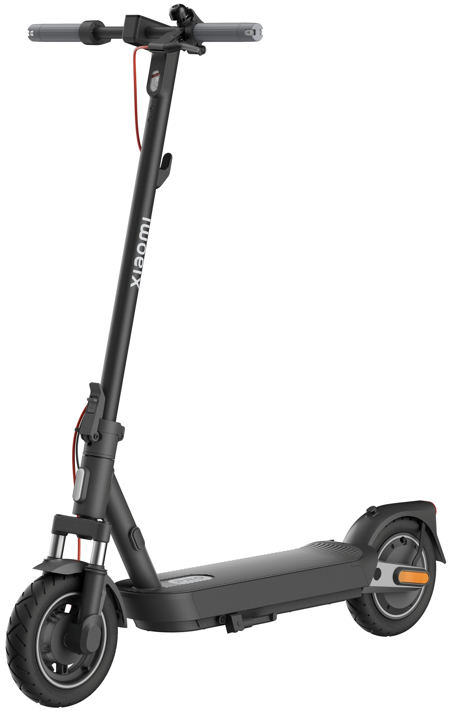
🔥 BestsellerNajczęściej modyfikowany model przez naszych klientów. Doskonały balans mocy, zasięgu i komfortu jazdy.
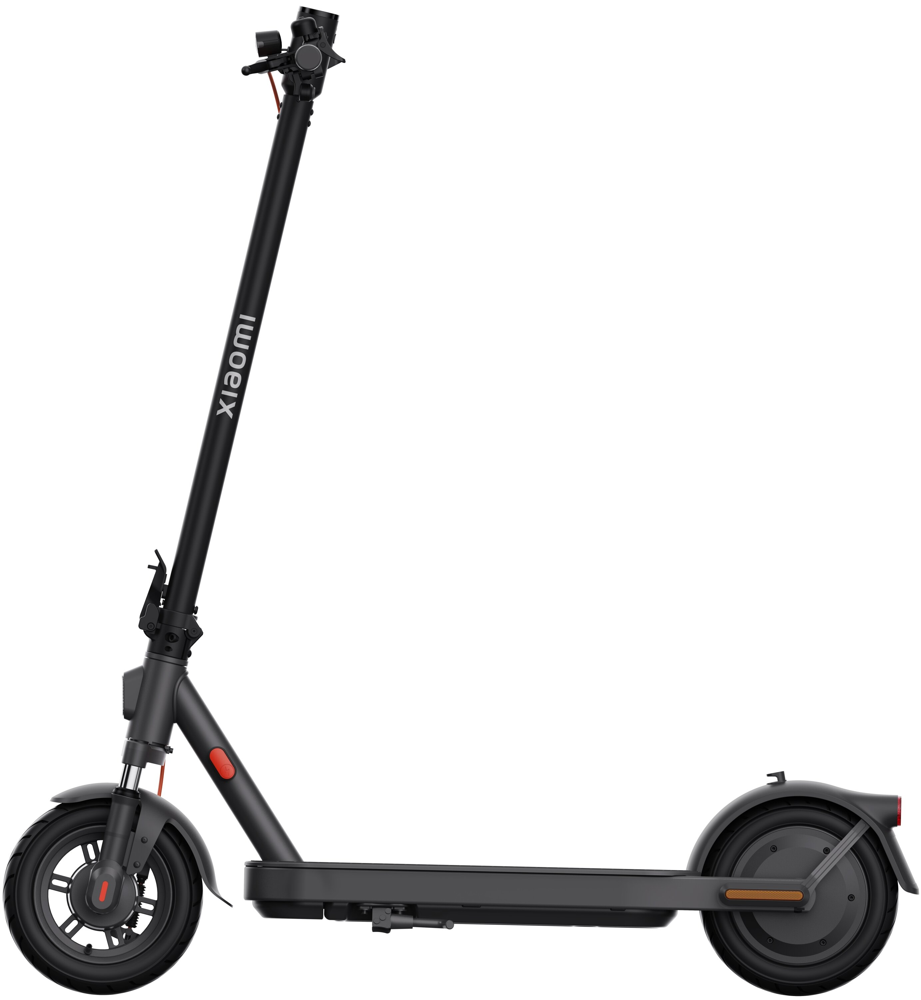
⭐ TopAbsolutny flagowiec linii piątej generacji. Najlepsza jakość wykonania, największe możliwości modyfikacji.
Każda modyfikacja to indywidualnie skonfigurowane oprogramowanie — dopasowane do Ciebie i Twojego modelu.
Standardowe ustawienia fabryczne w Polsce sztucznie ograniczają hulajnogi Xiaomi do 20 km/h. Po profesjonalnej modyfikacji firmware możesz jeździć z prędkością do około 30 km/h — w zależności od modelu i ukształtowania terenu.
Zwiększenie prędkości osiągane jest poprzez zmianę parametrów oprogramowania — bez jakiejkolwiek ingerencji mechanicznej w silnik ani baterię.
Fabrycznie w Polsce hulajnogi Xiaomi mają sztywne limity prędkości. Po modyfikacji możesz samodzielnie ustawić prędkość w trybach Drive i Sport — pod swoje potrzeby.
Standardowo hulajnogi Xiaomi wymagają wyraźnego odbicia się nogą przed uruchomieniem silnika. Dzięki modyfikacji Kick Start silnik włącza się już od 1 km/h — wystarczy minimalny impuls, by ruszyć płynnie.
To wygodne rozwiązanie szczególnie przydatne w ruchu miejskim, na skrzyżowaniach i przy starcie pod górę.
Aktywacja funkcji tempomatu (Cruise Control) pozwala utrzymywać stałą prędkość bez ciągłego trzymania manetki. Idealne na dłuższe, proste odcinki — ramię nie męczy się tak szybko.
Czas aktywacji tempomatu można skonfigurować według własnych preferencji.
Przy rozsądnej konfiguracji nie obserwuje się istotnego wpływu na codzienne użytkowanie hulajnogi. Wszystkie ustawienia dobierane są indywidualnie, z zachowaniem marginesów bezpieczeństwa.
Nie ingerujemy mechanicznie w silnik ani akumulator. Modyfikacja polega wyłącznie na konfiguracji oprogramowania — bez lutowania i otwierania obudowy.
Parametry ładowania i zarządzania baterią pozostają na bezpiecznych poziomach. Żywotność akumulatora nie jest zauważalnie skracana.
Na życzenie możemy w każdej chwili przywrócić oryginalne ustawienia fabryczne. Modyfikacja jest w pełni odwracalna.
Każda hulajnoga jest testowana bezpośrednio po modyfikacji. Sprawdzamy poprawność działania wszystkich funkcji przed wydaniem klientowi.
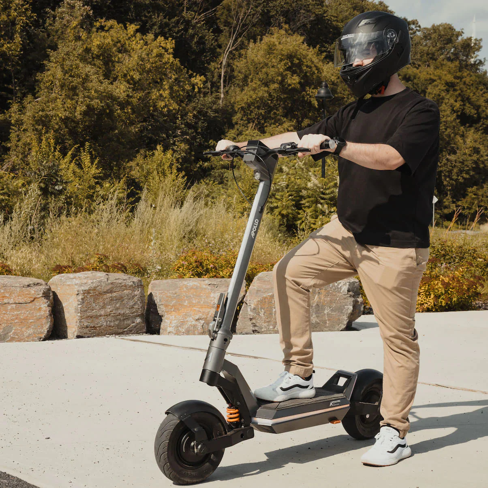
Prosto, szybko i profesjonalnie. Od kontaktu do gotowej hulajnogi — sześć kroków.
Napisz lub zadzwoń — omówimy szczegóły
Sprawdzamy kompatybilność Twojego modelu
Wybierasz wygodny dla siebie termin
Konfigurujemy firmware pod Twoje oczekiwania
Sprawdzamy działanie wszystkich funkcji
Odbierasz hulajnogę i możesz od razu jeździć
Masz wątpliwości? Zebraliśmy odpowiedzi na wszystkie pytania, które dostajemy najczęściej.
Ponad 200 zadowolonych klientów z całej Polski. Sprawdź, co mówią o naszej usłudze.
Artykuły o modyfikacjach, firmware i wszystkim, co powinieneś wiedzieć o Xiaomi Electric Scooter.
Odkryjemy, co tak naprawdę kryje się za pojęciem "odblokowanie Xiaomi" i czy warto zdecydować się na modyfikację.

Wyjaśniamy w prostych słowach, czym jest firmware Xiaomi i jak modyfikacja oprogramowania wpływa na działanie hulajnogi.
Kompletny przewodnik po możliwościach zwiększenia prędkości Xiaomi Electric Scooter — co jest możliwe, a co jest mitem.
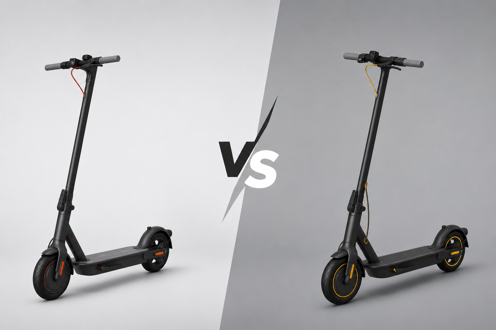
Szczegółowe porównanie obu modeli z perspektywy modyfikacji. Który opłaca się bardziej i dlaczego właśnie 5 Pro jest naszym bestsellerem.
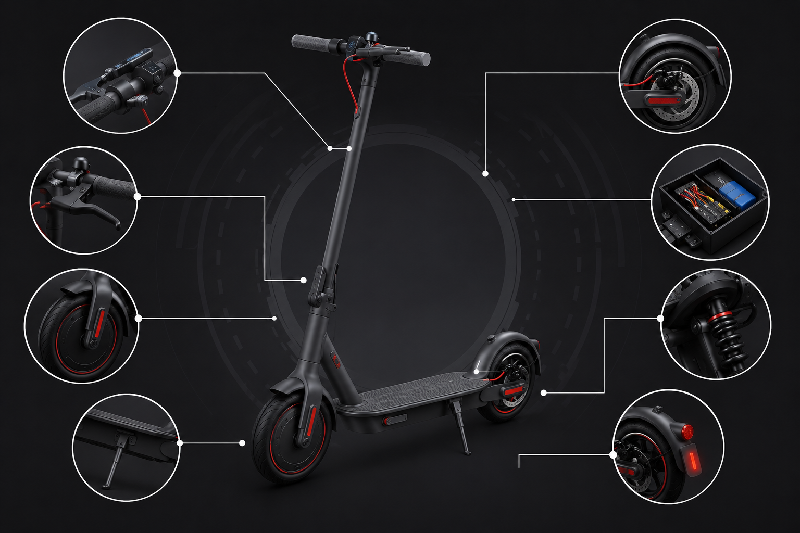
Jakie ustawienia wybrać po modyfikacji? Omawiamy optymalne konfiguracje dla różnych stylów jazdy i modeli hulajnóg Xiaomi.
Wypełnij formularz lub skontaktuj się bezpośrednio. Odpowiadamy szybko — zazwyczaj w ciągu kilku godzin.
Dziękujemy! Skontaktujemy się z Tobą w ciągu kilku godzin, aby ustalić termin modyfikacji.
Działamy w Łodzi i okolicach. Chętnie odpowiemy na wszystkie Twoje pytania dotyczące modyfikacji hulajnogi Xiaomi.
+48 729 463 351
Pon–Pt 9:00–19:00
Sobota 10:00–16:00
odblokowanie.hulajnog.xiaomi@gmail.com
Odpowiadamy w ciągu kilku godzin
Łódź, Polska
Dokładny adres podajemy
po umówieniu terminu